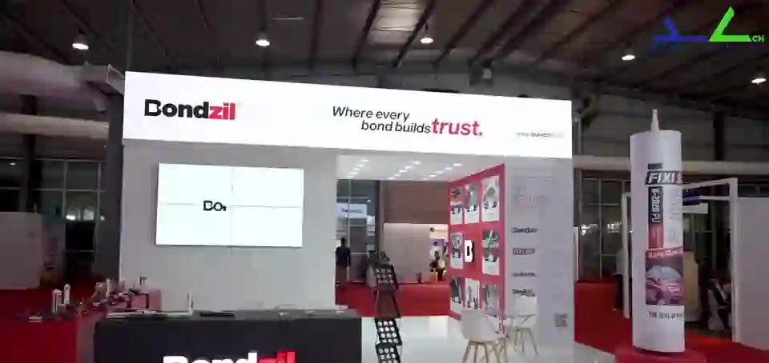
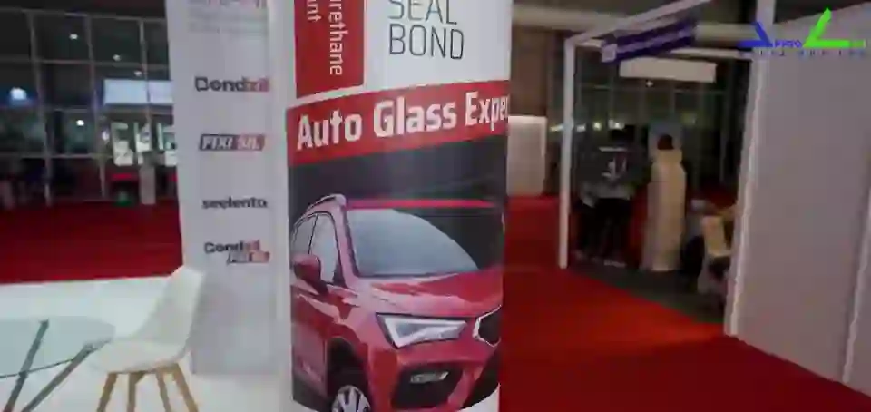

About Approach Media
Understood. Experienced. Remembered.
We design unique exhibition stalls so that your brand is all three. This is one of ours, at a live show.
Exhibitions are high-investment environments.
A space has moments to communicate, engage, and be remembered.
In an ocean of lookalikes, those who stand apart will survive.

Step inside
Everything here is built, not bought.
Custom fabrication from our own workshop. Joinery, structure and finishes to exact specification.
Screens, lighting and sound planned inside the stall from day one, not bolted on at the venue.
How a stall gets built.
One team, seven stages, no hand-offs. You stay informed at the decision points. We manage the rest.
- 01
Consultation and brief planning
Brand, audience, objectives, space, budget, timelines.
- 02
Concept and spatial design
A customised concept that guides visitor flow.
- 03
Engineering and technical detailing
Drawings and specifications for structural integrity.
- 04
Fabrication and build
Produced in-house under controlled conditions.
- 05
Full-scale mock-up testing
The complete stall assembled and tested in our warehouse first.
- 06
Logistics, installation and on-site execution
Packing, transport, install: ready ahead of the event.
- 07
Dismantling and post-event wrap-up
Careful teardown, materials handled for reuse or storage.


Since 2002
0+ stalls designed and builtYour stall is next.
Tell us about your show. A project lead reviews every brief within one business day.
Book a Consultation